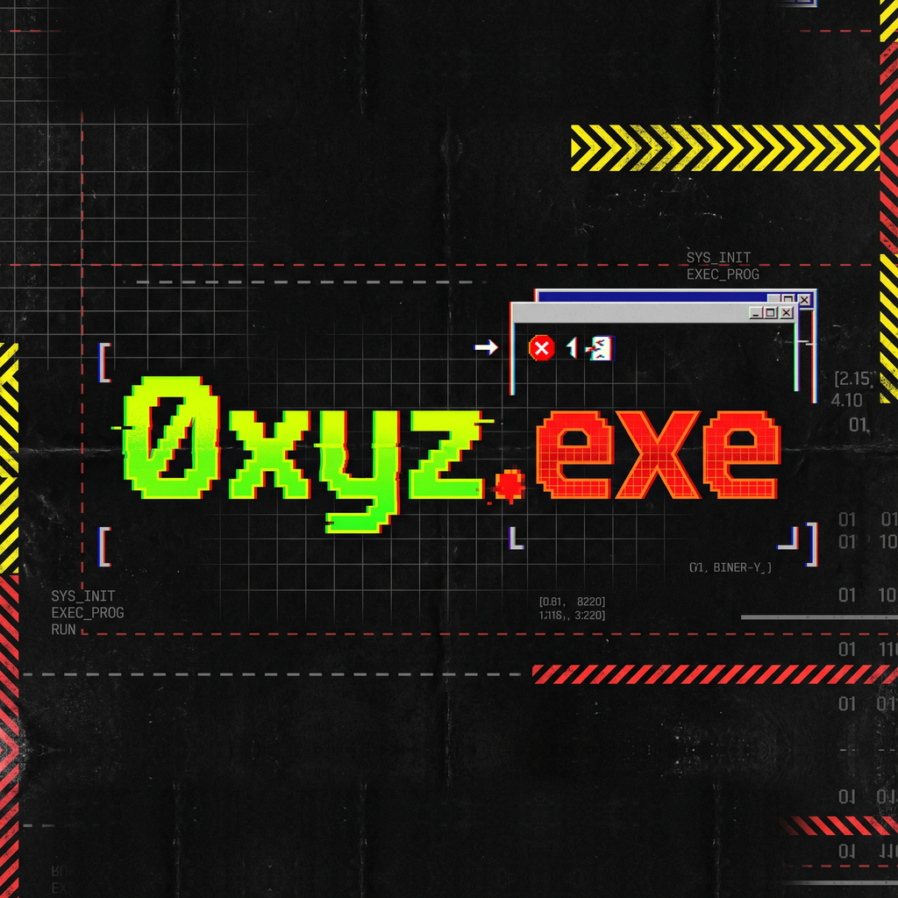
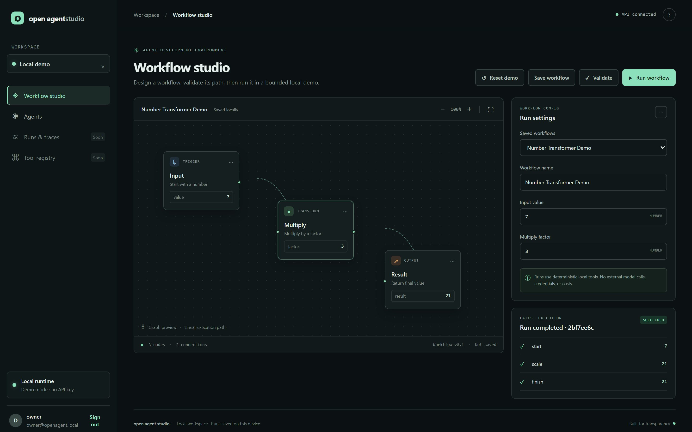
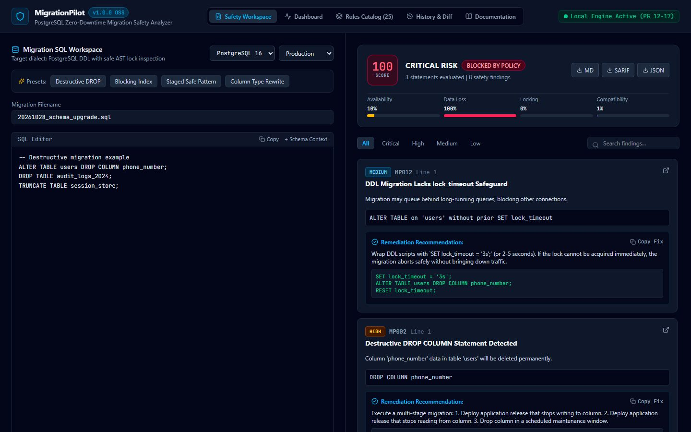
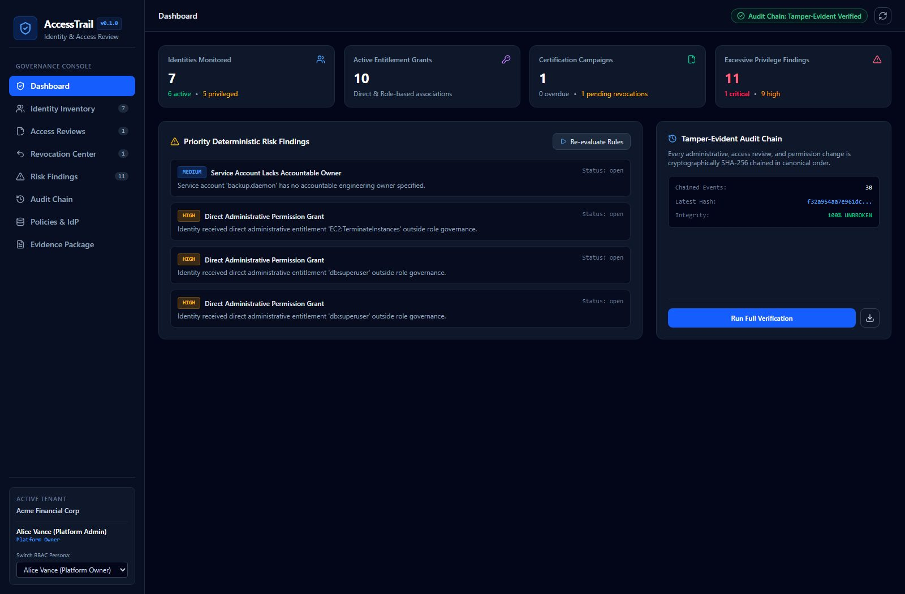
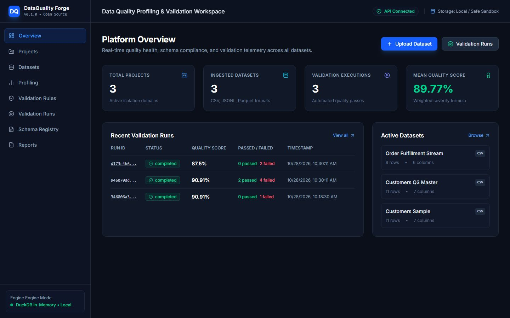
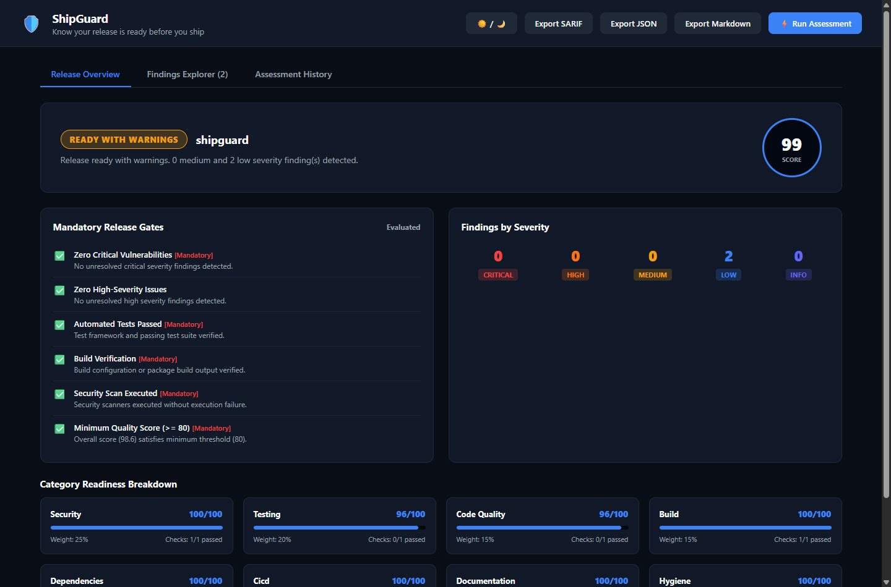

Software engineering
System design · API design · database modeling · testing · debugging
SOFTWARE ENGINEERING · SIDOARJO, ID
I'm Daniel Achmad Farizki — a software engineer building reliable applications, intelligent systems, and developer tools.

01 / ENGINEERING PROFILE
Structure first. Evidence over assumption.
I work from the system boundary inward: clarify the problem, make data and responsibilities explicit, then build an interface that keeps the important details understandable.
My projects span full-stack applications, backend workflows, AI integrations, and tools for developers. I pay attention to the parts that make software dependable: clear contracts, access boundaries, useful error states, and testing the path a person actually takes.
I use AI and automation as engineering tools—not substitutes for verification. The aim is software that is useful, inspectable, and straightforward to maintain.
02 / PRACTICE AREAS
Tools applied in public project work.
System design · API design · database modeling · testing · debugging
JavaScript · TypeScript · responsive interfaces
PHP · Laravel · Python · FastAPI · REST APIs · authentication
Python · AI integration · prompt engineering · YOLO computer vision
Git · GitHub · Docker · Playwright · CI workflows
03 / ENGINEERING CASES
Problem: Agent workflows need visibility before they can be debugged. A local-first prototype for composing, inspecting, and orchestrating agent pipelines.
Challenge: Make intermediate agent steps inspectable.
No claimed provider isolation, durable execution, or permission controls.

Problem: Destructive or blocking DDL can cause outages. Static PostgreSQL migration analysis parses schemas, evaluates deterministic safety rules, and suggests safer alternatives.
Challenge: Explain risk without executing migrations.
No live database execution.

Problem: Entitlement reviews need traceable decisions. The platform implements access review flows, server-enforced separation of duties, revocation states, and a verifiable SHA-256 audit chain.
Challenge: Preserve audit integrity across authorization-sensitive actions.
Verify production readiness independently.

Problem: Data defects need reproducible checks. Local dataset profiling, declarative validation rules, explainable scoring, and schema change detection combine in one self-hosted tool.
Challenge: Apply consistent checks across tabular formats and surface actionable failures.
Self-hosted; no managed cloud service.

Problem: Release checks are fragmented. A local analyzer combines deterministic quality gates for security, tests, dependencies, build readiness, and documentation; emits SARIF.
Evidence: 17 tests pass, build succeeds on the inspected main branch.
Local analysis only; no cloud execution environment.

Problem: School content requires maintainable editing workflows. A Laravel application supports academic announcements, gallery management, authentication, administration, and configurable site templates. Built during the documented internship.
Challenge: Make CMS workflows accessible to non-technical staff.
No UI screenshot available; live site linked below.
Maturity labels reflect the inspected repository snapshot, not production certification. "Functional" means implementation and a test/build signal exist; deployment, security posture, and operational readiness remain separately unverified. See the complete repository audit, evidence, scores, and roadmap.
04 / BACKGROUND
Worked on a school CMS using Laravel, Blade, and Tailwind CSS, including administration tools, content workflows, and configurable site themes.
School CMS repository ↗Participated in Google's student ambassador program, engaging with student communities and supporting technology and AI awareness initiatives.
Degree completed; graduation date: 4 August 2026.
OPEN SOURCE / PUBLIC WORK
05 / CONTACT
For engineering roles, collaborations, or a thoughtful technical conversation, email is the most direct route.